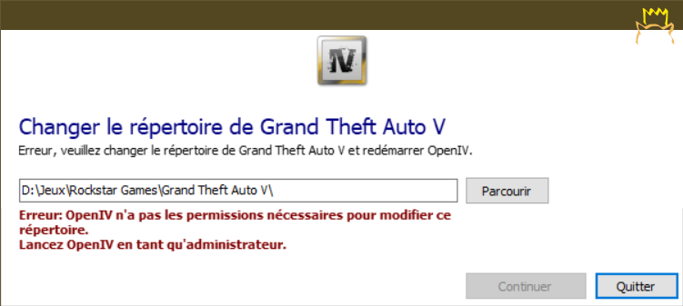
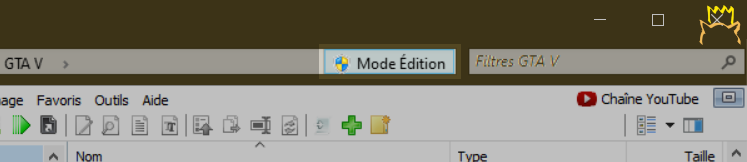
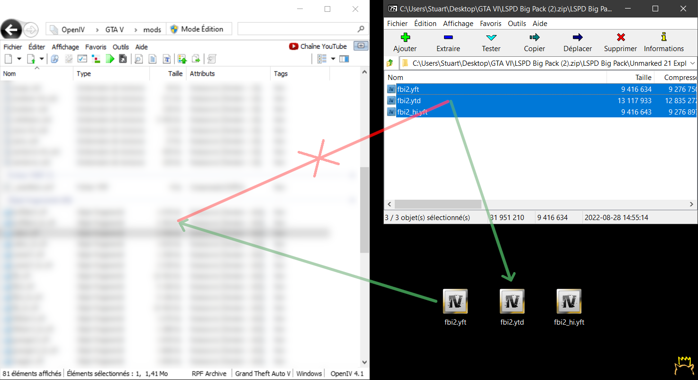

Avant de modder le jeu ou d'ajouter des plugins, il est recommandé de faire une sauvegarde (copie) de la racine.
OpenIV n'a pas les permissions nécessaires pour accéder au dossier du jeu.

Relancez OpenIV en tant qu'administrateur.
Une fois OpenIV lancé, cliquez sur "What can I do?" dans la bannière orange,
puis cliquez sur "Set permissions",
cliquez sur "OK" pour le message de confirmation,
puis sur "Close" et relancer OpenIV (pas en tant qu'administrateur).
N'exécutez pas OpenIV en tant qu'administrateur, cela bloque la fonction cliquer-glisser.
Voir la solution liée
Vérifiez que vous avez installé ASI Manager et OpenIV.asi.
Allez dans "Tools" > "ASI Manager" et vérifiez qu'ils sont installés.
Vérifiez que vous avez activé l' "Edit mode".
Si vous glissez des fichiers directement d'une archive (.zip, .rar ...), essayez d'extraire les fichiers (sur votre Bureau par exemple) dans un premier temps, puis de glisser les fichiers extrait sur OpenIV ensuite.
Fermez le jeu. S'il semble déjà fermé, vérifiez dans le gestionnaire des tâches.